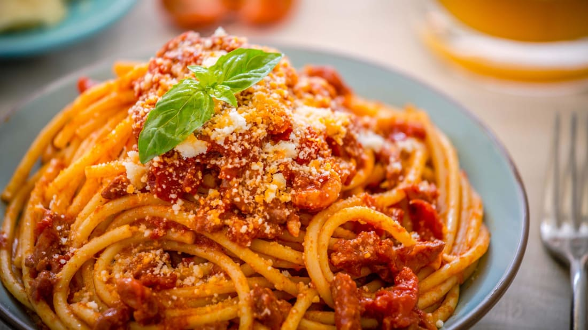

 Paolo Gramaglia loves tomatoes. The owner and chef of the Michelin-starred President restaurant in Pompeii, his link with the fruit is so strong, he says, that he and it are intrinsically entwined.Not that he thinks he's special -- he thinks all Italians have the same relationship with the pomodoro.
"Tomatoes are in our DNA," he says. "We grow up with tomato in our recipes. They've become the symbol of our gastronomy." And he's right. Whether it's a scarlet-slicked pizza or a red-sauced spaghetti al pomodoro, Italy's most instantly recognizable dishes both include tomato. Even the emoji for pasta isn't just pasta -- it's a steaming plate of spaghetti heaped with tomato sauce on top. But while today we think of tomatoes as inextricably linked to Italian food, that hasn't always been the case. In fact, it was only during the 19th century that tomatoes really hit the tables of the Bel Paese. Before that, it was widely thought they were poisonous.
Fritto Misto di Mare